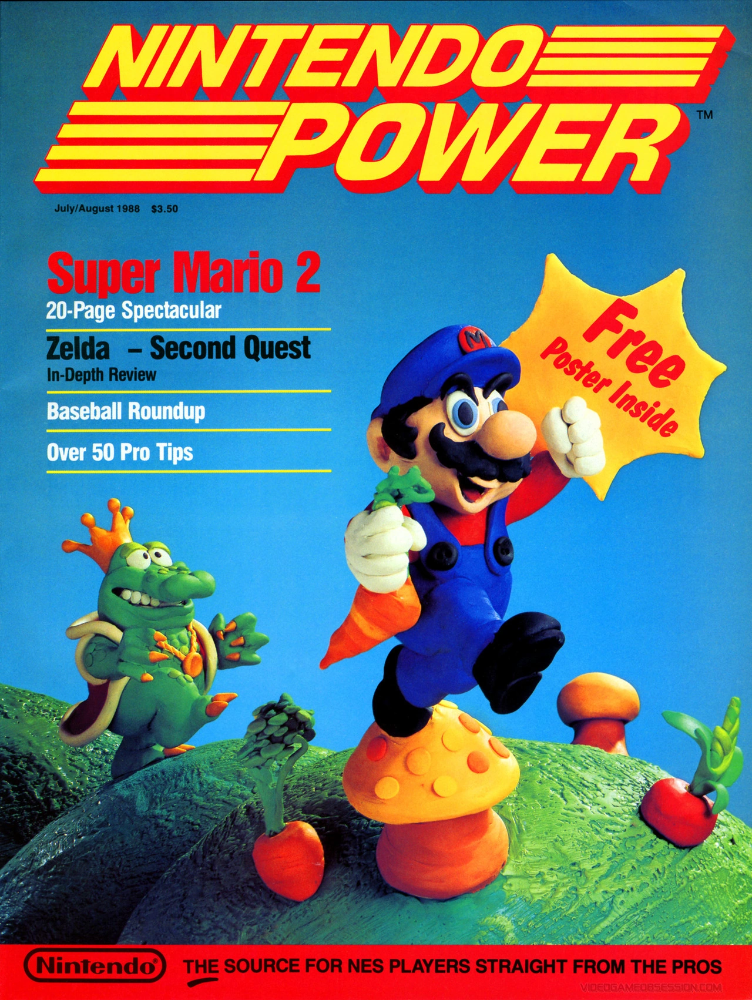
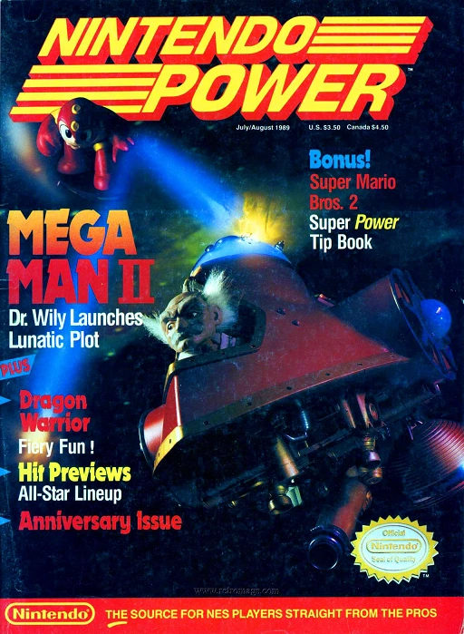
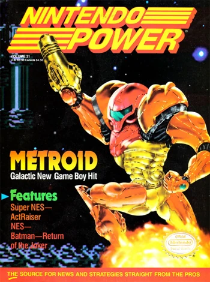
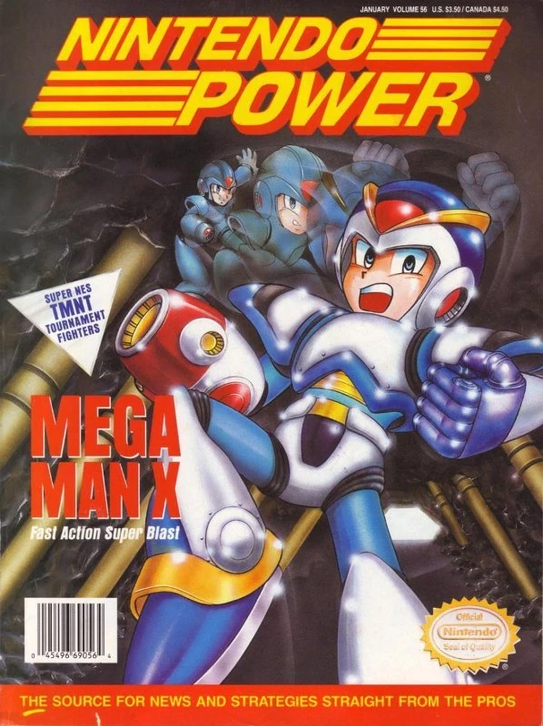
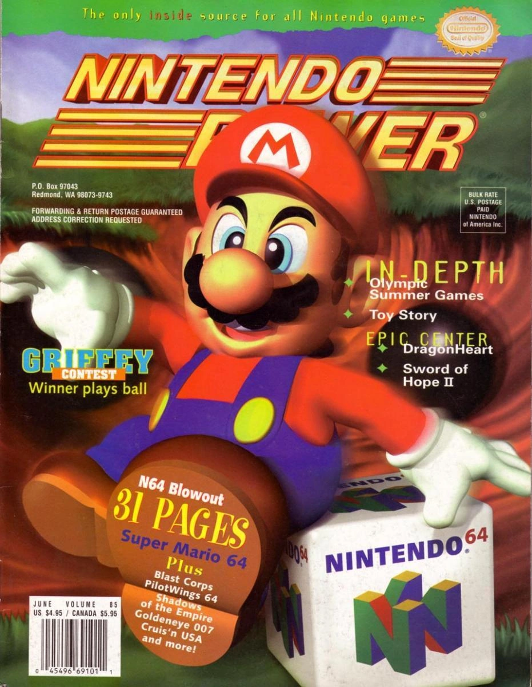
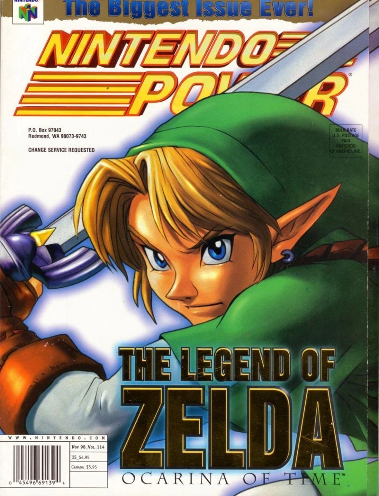

Volume 1
Volume 1 of Nintendo Power, featuring Super Mario Bros. 2 on its cover. Clay models of Mario and Wart were used.
Other features in this issue include:
- A large article on the American version of Super Mario Bros 2., known as Super Mario USA in Japan. It summarized the four playable characters in Mario, Luigi, Toad, and Princess Toadstool, tips on how to complete the game, enemy showcases, and maps of some of the game's worlds.
- An article on Zelda: The Second Quest Begins
- The first Howard & Nester comic strip
Volume 7
Volume 7 of Nintendo Power, featuring Mega Man II on its cover, with a huge 16 page article on the game.
Other features in this issue include:
- Part one of a tip book titled Super Mario Bros. 2 Inside Out that contained information on the first four worlds of the game.
- Information on Dragon Warrior, a role-playing game
- Previews on the soon-to-be-released games RoboCop, DuckTales, Who Framed Roger Rabbit? and Ironsword: Wizards & Warriors II
Volume 31
Volume 31 of Nintendo Power, featuring Metroid II: Return of Samus on its cover.
Other features in this issue include:
- A 10 page article on Batman: Return of the Joker, with information on weapons, items, enemies, as well as maps for stages 1-7
- The last 2 page Nester's Adventures comic (until volume 231's 20th anniversary strip) that featured Nester dreaming about himself in the setting of Kid Icarus: Of Myths and Monsters
- An article showcasing the at the time new games The Simpsons: Bart vs. the World, Rampart, and Mega Man 4
Volume 56
Volume 56 of Nintendo Power, featuring Mega Man X on its cover. For subscribers of the magazine, there was an included bonus cover of a silver image of Mega Man X.
Other features in this issue include:
- A Mario vs. Wario comic
- An exclusive look at Japan-only games and accessories, including the game Mother and one of the early Fire Emblem games
- A members-only special containing a list of all currently released Super Nintendo games, a top 10 list of Super Nintendo games, top 5 Game Boy and top 5 NES games released in 1993, and behind-the-scenes information on game soundracks and upcoming 1994 Super Nintendo games like Super Metroid
Volume 85
Volume 85 of Nintendo Power, featuring Super Mario 64 on its cover and a massive 31 page article about the then brand new Nintendo 64.
Other features in this issue include:
- Articles about the Super Nintendo games Olympic Summer Games, Izzy's Quest for the Olympic Rings, "Ken Griffey, Jr.'s Winning Run", and Mohawk and Headphone Jack
- A section covering the top 20 Super Nintendo games, top 10 Game Boy games, top 5 Virtual Boy games, top 5 tournament fighter games, and top 10 most wanted games at the time as ranked by the readers
- A section that gave tips and strategies for role-playing games DragonHeart and Sword of Hope II for the Game Boy, and Lufia II: Rise of the Sinistrals and Final Fantasy III for the Super Nintendo
Volume 114
Volume 114 of Nintendo Power, featuring The Legend of Zelda: Ocarina of Time on its cover.
Other features in this issue include:
- Strategy information for Nintendo 64 games Ocarina of Time, Buck Bumble, S.C.A.R.S, Banjo-Kazooie, Body Harvest, Glover, NHL 99, Fighting Force 64, Wipeout 64, and Extreme-G 2
- Previews of Star Wars: Rogue Squadron and Superman 64
- A section on the top 10 Nintendo 64 games, top 10 Super Nintendo games, top 5 Game Boy games, and the 10 most wanted games at the time as ranked by readers
Honorable Mentions
While not included in this small archive, the following covers are also worth checking out:
- Volume 4
- Volume 4 featured Zelda II: The Adventure of Link on its cover.
- Volume 11
- Volume 11 featured Super Mario Bros. 3 on its cover.
- Volume 28
- Volume 28 featured Super Mario World on its cover. It was the first to showcase a Super Nintendo game on the cover.
- Volume 49
- Volume 49 featured Battletoads & Double Dragon on its cover, and was the last time a new NES release was the cover story.
- Volume 50
- Volume 50 featured The Legend of Zelda: Link's Awakening on its cover. This issue celebrated 5 years and 50 issues of the magazine.
- Volume 54
- Volume 54 featured Secret of Mana on its cover.
- Volume 60
- Volume 60 featured Super Metroid on its cover.
- Volume 98
- Volume 98 featured Star Fox 64 on its cover.
- Volume 285
- Volume 285, the final issue, featured New Super Mario Bros. U on its cover, and was a callback to the very first issue as it used clay models of Mario and Bowser in the same poses as the original cover of the first volume.
With 285 issues released, there's dozens and dozens more covers that are bound to interest you beyond what's listed here. While it's not the most official source out there, the Nintendo fandom wikia has a list of all volumes, with a scan of the cover for each issue, if you'd like to check out more.